L2 / Mean Squared Error
Lower values indicate a closer match. My implementation uses the mean squared difference, which is an SSD-style variant of L2.
$\operatorname{MSE}(I,R)=\frac{1}{N}\sum_p(I_p-R_p)^2$
Project 1 · CS180
Colorizing the Prokudin-Gorskii collection by aligning three monochrome glass-plate exposures, from exhaustive pixel matching to a coarse-to-fine pyramid and gradient-based alignment.
Part 1
Part 2
For the small JPEG scans, I exhaustively search all translations in a $[-15,15]$ pixel window. I apply an automatic cropping function to remove the image borders and crop corresponding regions using each candidate $(d_x,d_y)$ offset. NCC is then computed on these clean, matching regions.
Lower values indicate a closer match. My implementation uses the mean squared difference, which is an SSD-style variant of L2.
Higher values indicate a closer match. Mean subtraction makes NCC less sensitive to a global brightness offset.
Part 3
The broad displacement is found where the images are small. Full-resolution work is limited to a local 11×11 search rather than hundreds of candidate shifts in each direction.
On the collected baseline run, pixel NCC typically took 15–19 seconds per TIFF and pixel L2/MSE took about 8–9 seconds, remaining below the one-minute target.
Church, Harvesters, Melons, and Icon are large TIFF inputs aligned with the image pyramid. These saved examples use the final Sobel-NCC metric explained in Part 4.
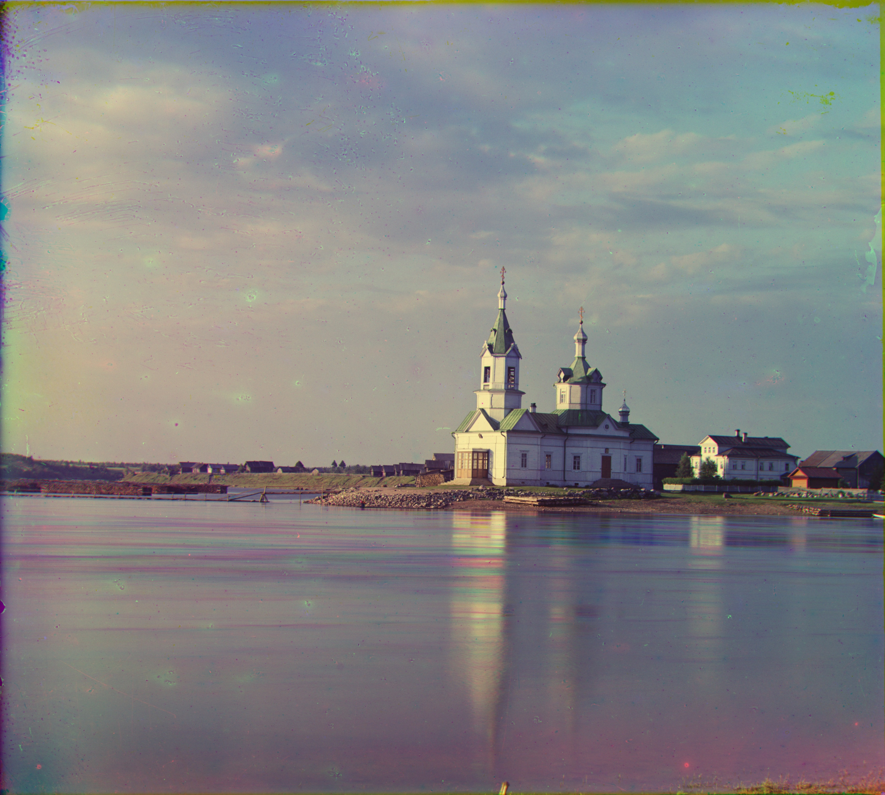
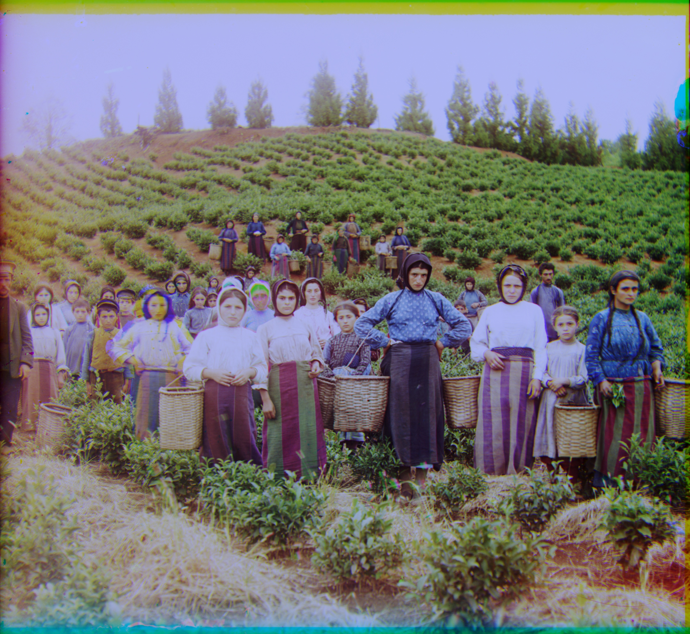
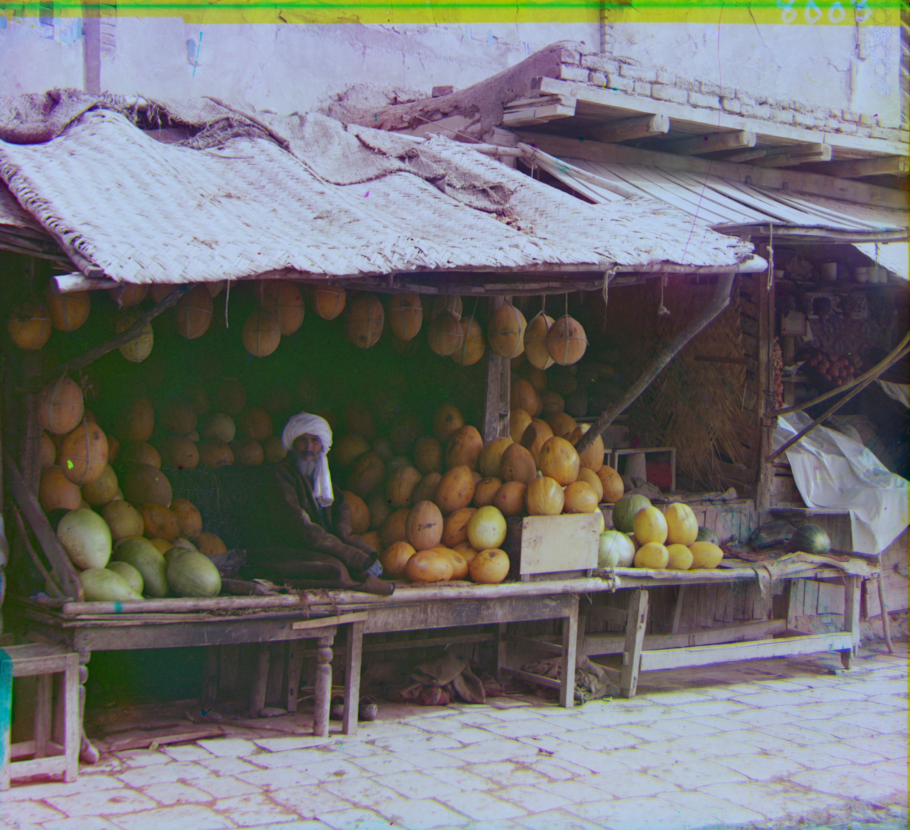
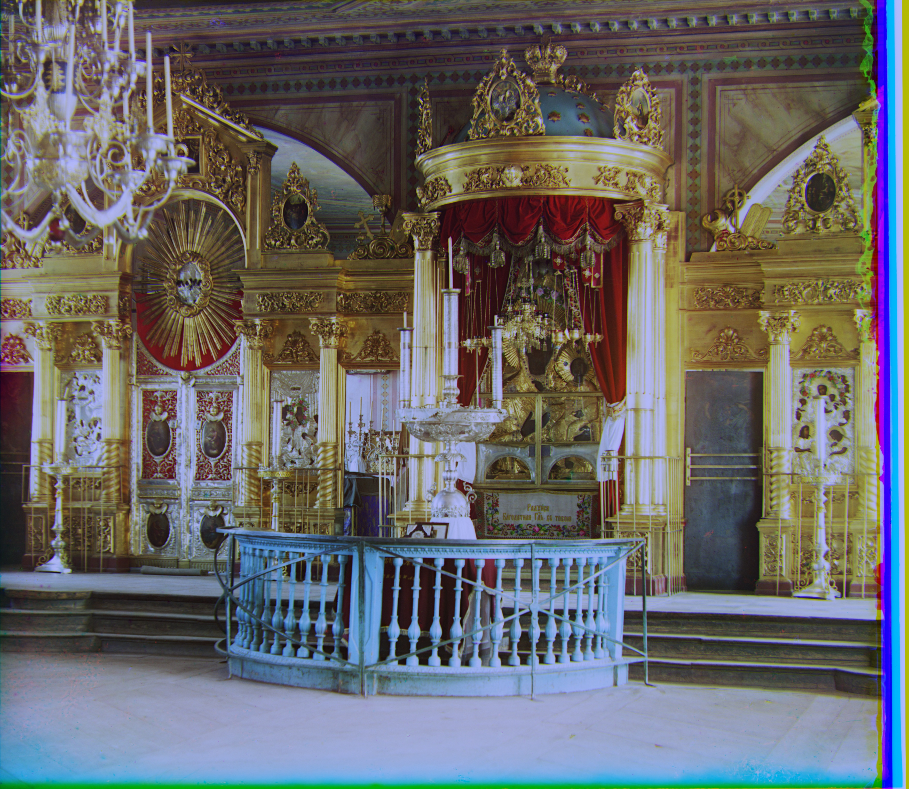
The red, green, and blue filters record different relative brightnesses in Emir's clothing and surroundings. Raw intensities therefore do not match consistently across channels. The pixel-NCC pyramid selects an incorrect coarse red-channel offset and carries that error into finer levels.
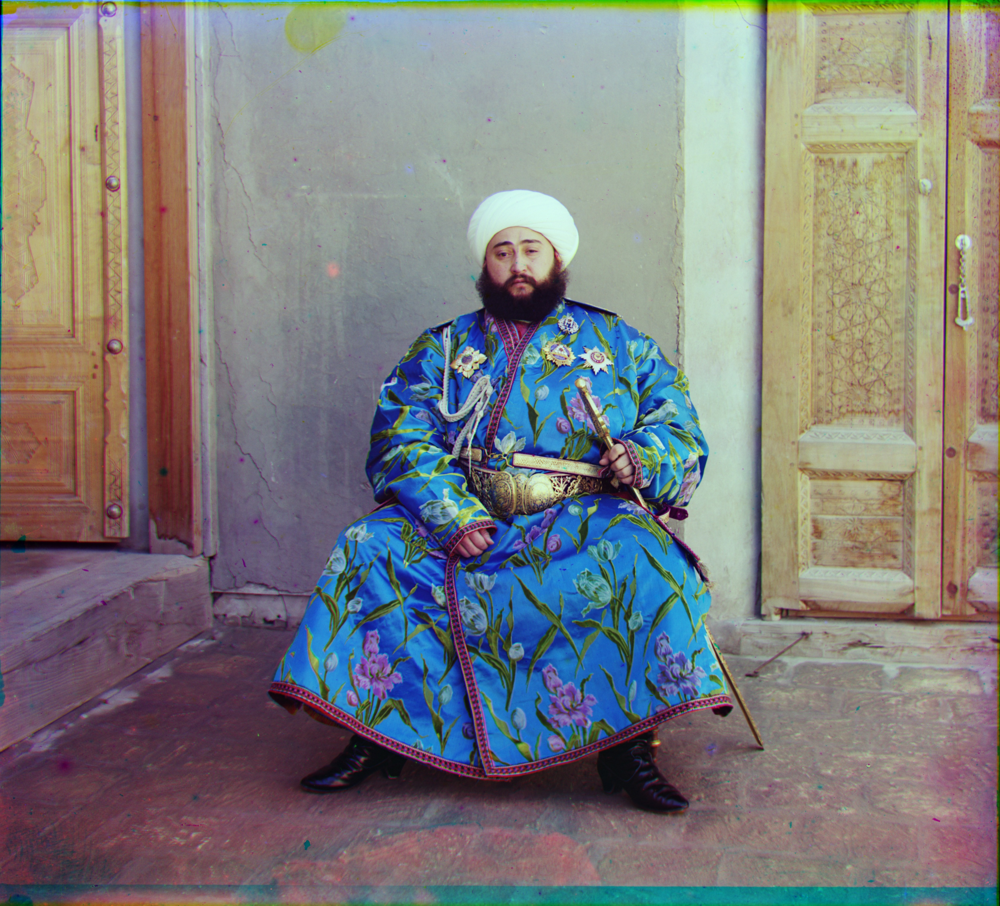
The failure is driven by channel-dependent color and brightness differences, not just a large displacement. Matching shared edges with Sobel gradients resolves this case, as detailed in Part 4.
Part 4
I replace raw pixel intensities with gradient magnitudes before searching for an alignment. The outlines of Emir's robe, face, and background remain at the same scene locations across the three exposures, even when the materials have very different brightnesses through each color filter. Comparing these shared boundaries gives NCC a more consistent signal.
My custom 2D filter slides the following $3\times3$ kernels over each channel. The center row or column receives twice the weight, combining a local intensity difference in one direction with smoothing in the other. Edge padding preserves the image dimensions.
Here $\star$ denotes applying the displayed kernel directly to each local neighborhood, as in my filtering implementation. $G_x$ measures left-to-right changes, and $G_y$ measures top-to-bottom changes with the sign convention shown above.
At each pixel, I combine the two directional responses into one nonnegative edge-strength image for each channel:
The magnitude emphasizes boundaries and discards the sign of the local change. A boundary can therefore remain useful even when it is bright-to-dark in one channel and dark-to-bright in another. Large, nearly uniform regions contribute little edge energy.
Because both Sobel kernels sum to zero, a constant brightness offset disappears. For a global intensity change $J=aI+b$, the magnitudes satisfy $M_J=|a|M_I$; NCC then normalizes this scale difference. Raw-pixel NCC already handles a global gain and offset, but Emir's different materials change brightness differently across color filters. The benefit here is comparing shared structure despite those local color-response differences.
At each pyramid level, I compute Sobel magnitudes for the moving channel $C\in\{G,R\}$ and the blue reference $B$. The same automatic cropping function produces clean, corresponding patches for every candidate displacement, and I select the displacement with the highest NCC:
Here $P_C$ and $P_B$ are the cropped gradient-magnitude patches for a candidate $(d_x,d_y)$. The coarsest level searches within ±30 pixels; each finer level doubles the previous offset and refines within ±5 pixels. I apply the winning offsets to the original intensity channels and stack them into RGB, so gradients guide the alignment while the output retains the original color information. My implementation also includes Prewitt and Roberts filters; the results below use Sobel.
Green aligns under all methods, but the red exposure is too dissimilar from blue for raw-pixel matching. The pyramid then amplifies an incorrect coarse estimate.
Part 5 · Enhancements
After alignment, I apply three automatic finishing steps: valid-overlap and dark-border cropping, global contrast stretching, and Gray World white balance.
First, the G/R offsets define the common valid rectangle, removing wrapped pixels created by np.roll. Sobel row and column profiles then search only the outer 20% for a dark-to-image transition. A brightness check prevents a strong interior edge from being selected solely because of its gradient.
One global linear mapping is shared by all RGB channels, preserving their relationship while mapping the darkest value to zero and the brightest to one.
The average RGB color is assumed to be neutral gray. Each channel receives a multiplicative gain that brings its mean to the shared mean. Statistics are accumulated in float64 to avoid visible error on ten-million-pixel images.
The crop detector is designed for dark borders. Bright or strongly colored rims can remain, as visible in several results. This is preferable to aggressively cutting genuine image content.
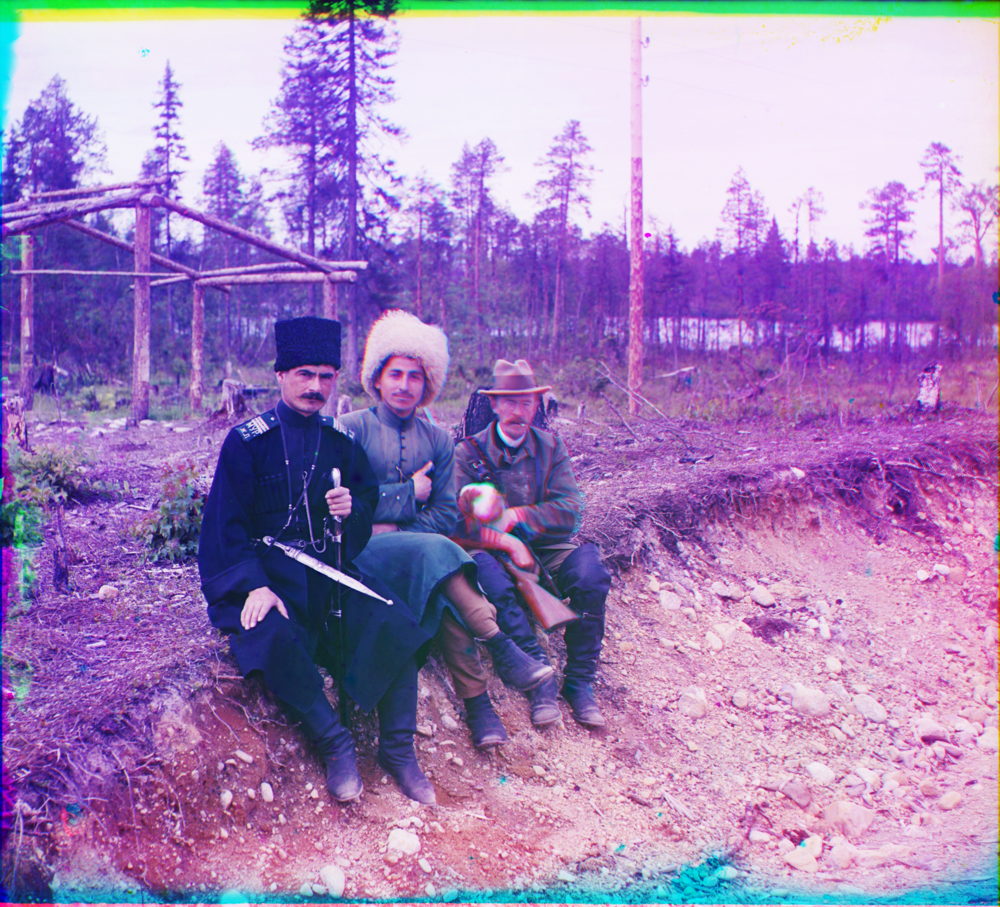
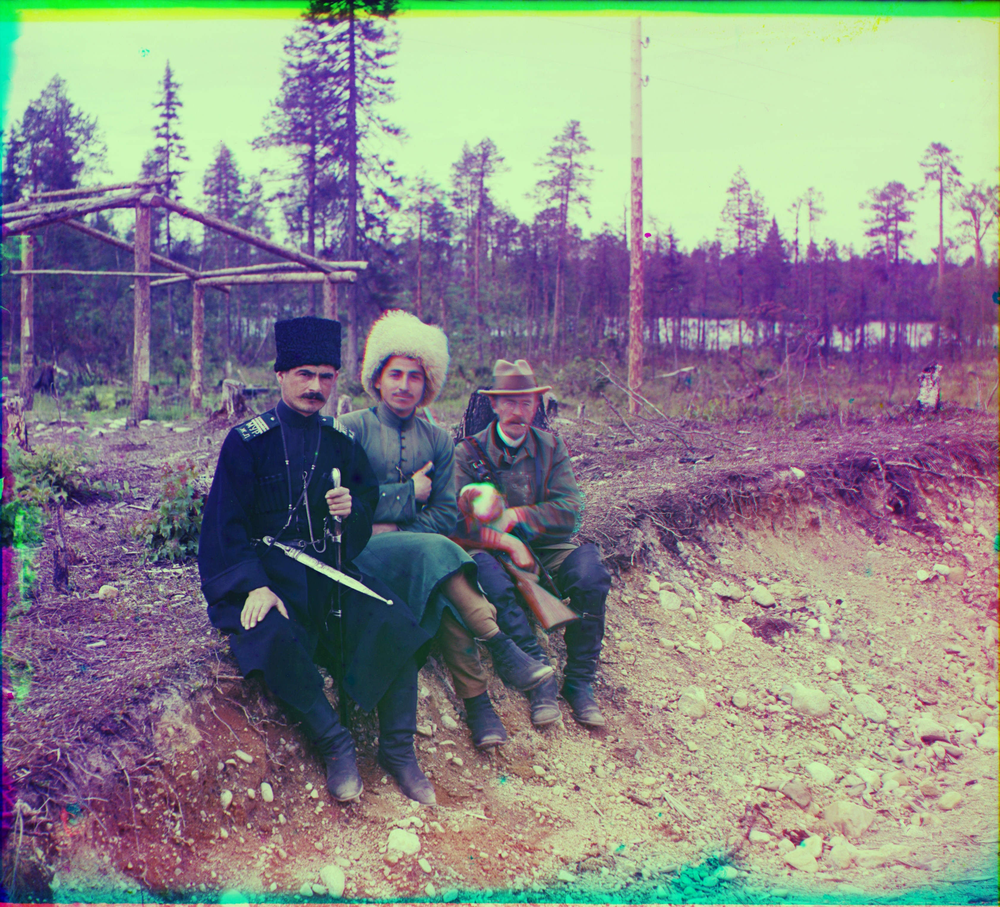
Part 6
The complete collection is organized by input type and alignment method: three small JPEGs, eleven provided large TIFFs, and three self-selected TIFFs. Offsets are reported as $(d_x,d_y)$ relative to blue. The large-input results are displayed as JPEG exports of the aligned TIFF scans.
Cathedral, Monastery, and Tobolsk use direct translation search at their original small resolution, without an image pyramid. The captions report the pixel-NCC and L2/MSE baseline scores.
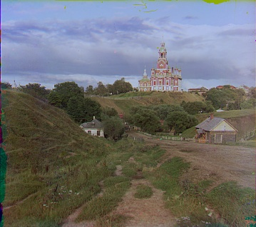
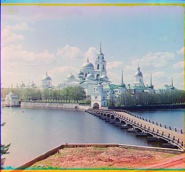
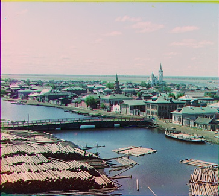
These are the provided large TIFF photographs. Their displayed results use the pyramid search with Sobel-gradient NCC, followed by cropping and contrast enhancement.
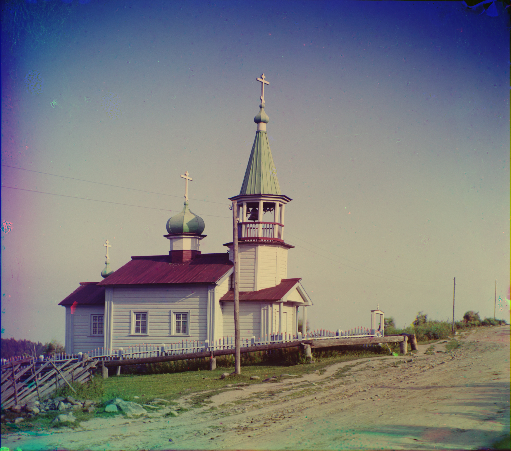
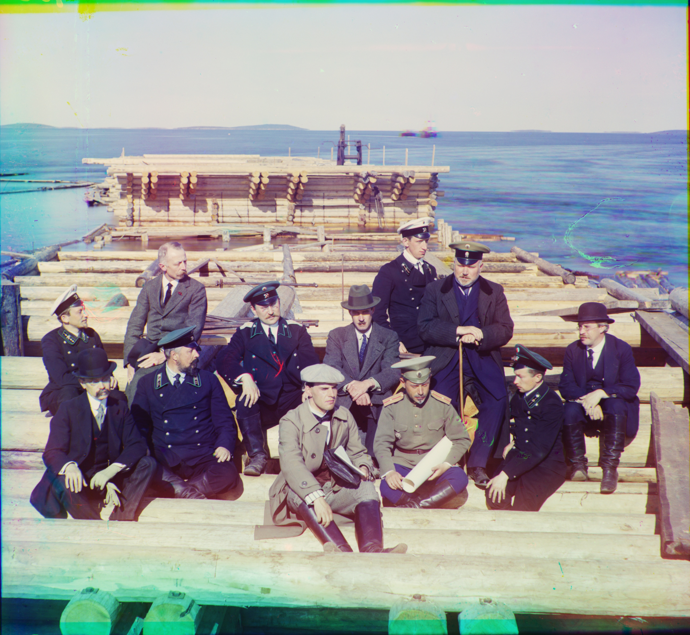
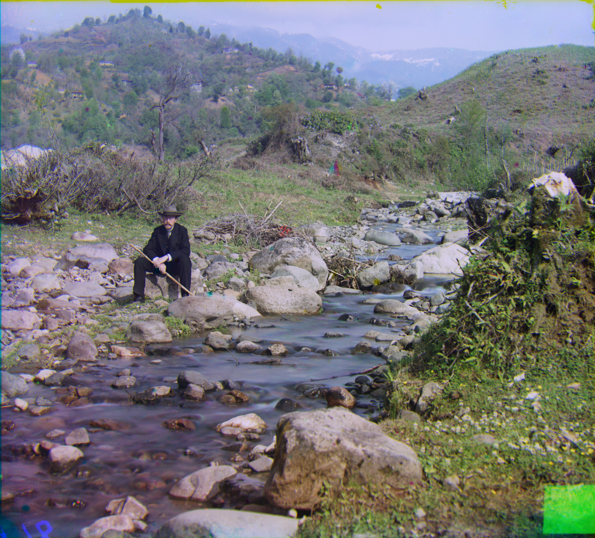
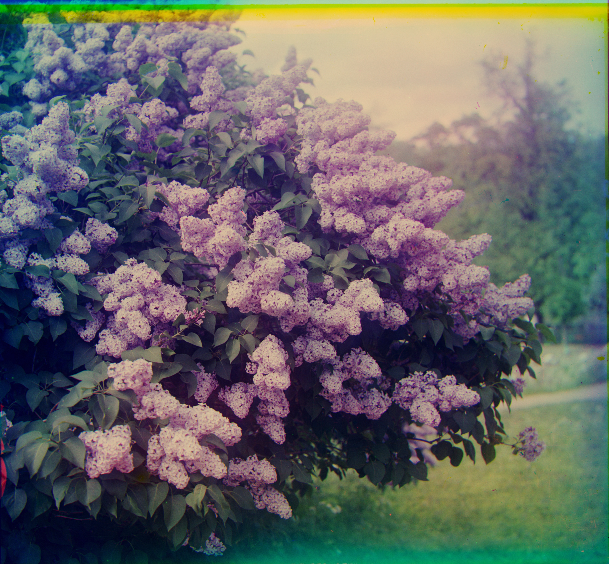
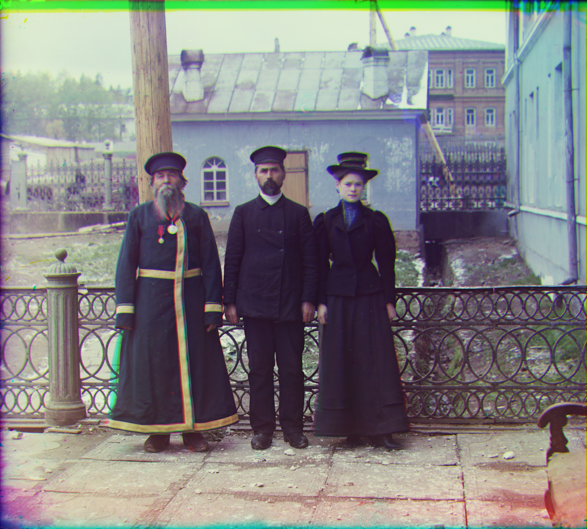
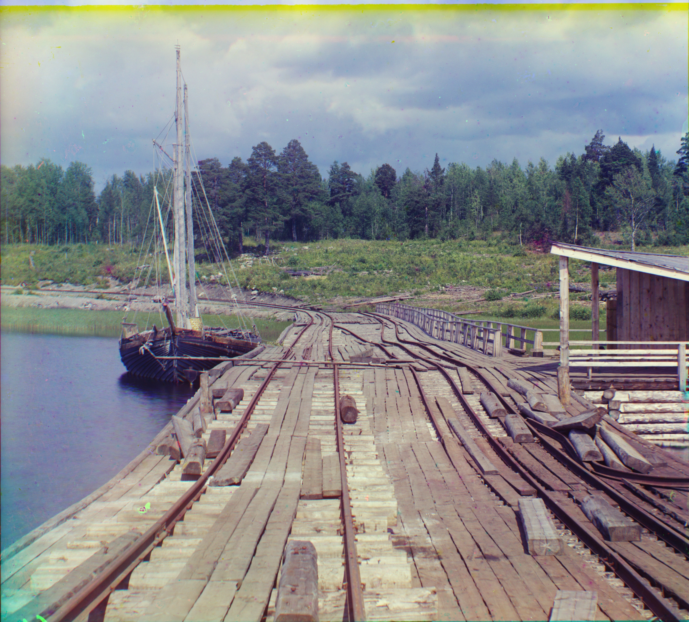
Gruppa, Bearded Men, and Religious Painting are my additional selections from the Prokudin-Gorskii collection. I process them with the same pyramid and Sobel-NCC settings, without image-specific offset tuning. The extra Gray World version of Gruppa is shown in Part 5.
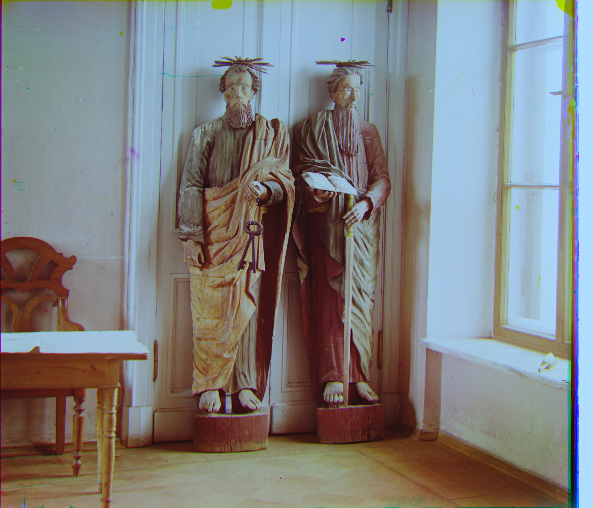
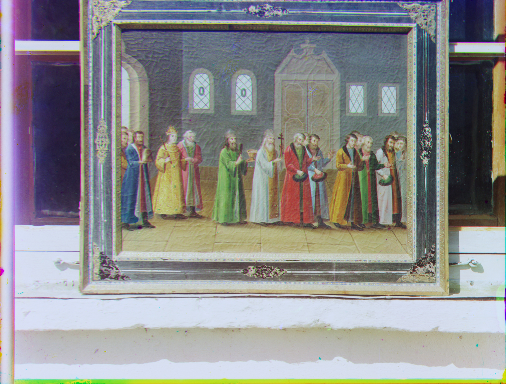
This table records the raw-pixel baseline runs. The large-TIFF gallery above instead shows the final Sobel-NCC results, whose offsets and scores appear in each image caption. Failed baseline offsets remain visible for comparison.
| Image | Scale | NCC G | NCC R | NCC score G / R | L2 G | L2 R | MSE G / R |
|---|---|---|---|---|---|---|---|
| Gruppa | Pyramid | (8, 33) | (15, 113) | 0.8282 / 0.8516 | (7, 33) | (15, 113) | 0.0774 / 0.0308 |
| Bearded Men | Pyramid | (13, 55) | (4, 126) | 0.9508 / 0.8482 | (13, 55) | (4, 125) | 0.0127 / 0.0834 |
| Cathedral | Single | (2, 5) | (3, 12) | 0.9590 / 0.9024 | (2, 5) | (3, 12) | 0.0209 / 0.0461 |
| Church | Pyramid | (4, 25) | (−4, 58) | 0.9088 / 0.7570 | (555, 555) | (555, 555) | 0.0505 / 0.0539 |
| Emir | Pyramid | (24, 49) | (−547, 443) | 0.7035 / 0.3061 | (24, 49) | (−555, −405) | 0.0245 / 0.0664 |
| Harvesters | Pyramid | (17, 60) | (13, 124) | 0.7777 / 0.7777 | (16, 59) | (13, 124) | 0.0523 / 0.0629 |
| Icon | Pyramid | (17, 41) | (23, 89) | 0.8027 / 0.6472 | (17, 41) | (23, 90) | 0.0465 / 0.0739 |
| Ilemselga | Pyramid | (7, 40) | (11, 130) | 0.7559 / 0.6443 | (7, 40) | (11, 130) | 0.0482 / 0.0685 |
| Melons | Pyramid | (11, 82) | (13, 178) | 0.9370 / 0.9066 | (11, 82) | (13, 178) | 0.0137 / 0.0343 |
| Monastery | Single | (2, −3) | (2, 3) | 0.9412 / 0.7897 | (2, −3) | (2, 3) | 0.0105 / 0.0389 |
| Railroad | Pyramid | (−14, 34) | (−25, 121) | 0.9385 / 0.8399 | (−14, 34) | (−25, 121) | 0.0159 / 0.0232 |
| Religious Painting | Pyramid | (3, 28) | (7, 68) | 0.8400 / 0.7924 | (3, 28) | (7, 68) | 0.0211 / 0.0294 |
| Self Portrait | Pyramid | (29, 79) | (37, 176) | 0.7700 / 0.7237 | (29, 79) | (37, 176) | 0.0215 / 0.0215 |
| Siren | Pyramid | (−6, 49) | (−25, 96) | 0.8410 / 0.8849 | (−6, 49) | (−25, 96) | 0.0517 / 0.0586 |
| Three Generations | Pyramid | (14, 53) | (11, 112) | 0.9277 / 0.8876 | (14, 53) | (11, 112) | 0.0170 / 0.0149 |
| Tobolsk | Single | (3, 3) | (3, 6) | 0.9220 / 0.8547 | (3, 3) | (3, 6) | 0.0120 / 0.0384 |
| Wharf | Pyramid | (−7, 15) | (−16, 83) | 0.8978 / 0.7617 | (−7, 15) | (−16, 83) | 0.0144 / 0.0216 |
On Emir, raw-pixel NCC and L2 both choose incorrect red-channel offsets. On Church, the L2 pyramid repeatedly reaches the edge of its refinement window and ends at (555, 555), while pixel NCC succeeds.
Some color fringes in Harvesters and Three Generations come from people moving between exposures; a single translation cannot correct that motion. The conservative border crop can also leave bright or colored rims.
Conclusion
The final system combines exhaustive translation search, a recursive image pyramid, NCC on Sobel gradient magnitude, valid-overlap cropping, contrast stretching, and Gray World white balance. The basic metrics work on most plates; the failures reveal why feature choice matters as much as search strategy.